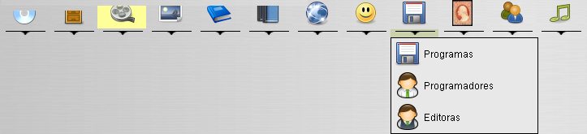
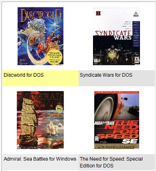

Janela principal
A janela principal contém barras de menus, de ferramentas, de lista de módulos, de estado, e um painel onde itens novos e
existentes podem ser vistos.
Barra de menus
A barra de menus fornece acesso rápido a todas a funcionalidades disponíveis para o
módulo ativo.
Barra de ferramentas
A barra de ferramentas fornece atalhos para todas as mesmas funcionalidades da barra de menus.
Lista de módulos
A lista de módulos mostra os módulos com que pode trabalhar. Pode alternar entre módulos a qualquer altura
(mesmo durante as importações). O módulo ativo está realçado.

Alguns módulos têm submódulos atribuídos. Por exemplo, o módulo Filmes tem um submódulo chamado atores.
Estes submódulos suportam o módulo principal; os Atores podem ser atríbuídos a filmes.

Clique na pequena barra por baixo do botão do módulo. Isto permite-lhe selecionar qualquer um dos submódulos.
Painel de agrupamento
Permite agrupar itens. Veja aqui mais acerca disto.
Vista
Os itens existentes são mostrados na secção central do ecrã.
Os itens mostrados podem ser abertos, atualizados ou apagados. Tudo isto é explicado na secção
Vistas da ajuda.
